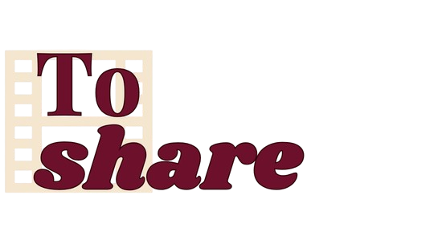

Aqui você pode registrar, avaliar e compartilhar suas experiências cinematográficas. Participe da comunidade!
O To Share é uma plataforma criada para aproximar pessoas que compartilham o interesse pelo cinema. A proposta é proporcionar um espaço para compartilhar opiniões, avaliações e experiências cinematográficas em uma comunidade acolhedora.
Acredito que assistir a um filme pode ir além do entretenimento, tornando-se uma oportunidade de conhecer novas perspectivas, compartilhar sentimentos e criar conexões por meio de histórias que despertam diferentes emoções.
Compartilhe suas experiências cinematográficas com colegas e amigos. Registre opiniões e fortaleça conexões por meio do cinema.
Organize seu histórico de filmes assistidos, atribua avaliações e acompanhe as atividades dos demais integrantes da comunidade.